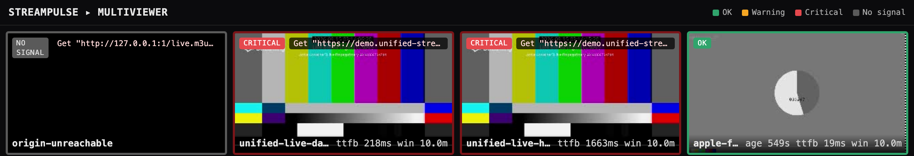
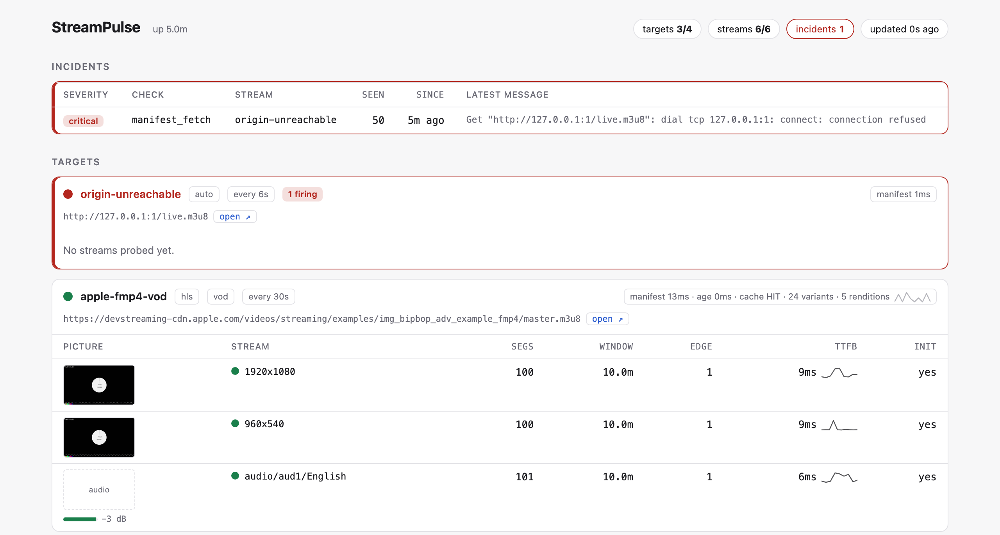

A packager that has stopped producing and a CDN edge serving a stale copy look identical from outside — same bytes, poll after poll. They are different teams and different fixes. StreamPulse tells them apart.

Every manifest finding carries what the cache headers said. The lag is split rather than judged: of the time a stream is behind, the part that is cache age and the part the packager was already behind when it generated that manifest.
# a real finding live edge is 306s behind wall-clock [cache: Age 300s, HIT — the packager was 6s behind when this was generated; the rest is cache age]
A threshold gets this wrong. Comparing Age to the lag calls a 300-second-old manifest behind a 306-second lag “fresher than the freeze” and blames the packager — when 98% of it is the cache. That is what the first version of this check did.
Each one a named check with a severity and a message that says what to do about it.
Manifests and segments that 404, time out, or return something that is not a manifest — including the CDN error page served with a 200.
Frozen live edges, timelines going backwards after an origin failover, less DVR than the manifest promises, edges drifting behind wall clock.
Spec violations, dangling rendition groups, holes at a period boundary where SSAI
stitching went wrong, $RepresentationID$ collisions.
Both formats. Chunked delivery silently degraded to whole-segment buffering, and an LL-HLS origin that promises blocking reload and does not honour it.
Unretrievable keys, clear segments on a stream declared encrypted, malformed PSSH, keys that quietly stopped rotating.
Codec and resolution disagreeing with the manifest, black or frozen video, silent audio. Optional — it shells out to ffprobe.
TR 101 290 Priority 1: sync loss, continuity counter breaks, transport errors, missing PAT/PMT. No TSDuck dependency; it reads the packets directly.
Run it in several places. The vantage labels every metric and every incident, so two probers do not overwrite each other.
Findings are deduplicated into incidents and notified on transitions, so one frozen
playlist is one alert rather than nine hundred. Everything is on /metrics
as well, with alert rules and a Grafana dashboard in the repo.

Docker only. The demo stack brings up the prober, the multiviewer, Prometheus and Grafana against public test streams — two of them broken on purpose, so you can see what a fault looks like.
git clone https://github.com/sthavana/streampulse.git
cd streampulse
make compose-up-full
operator page http://localhost:9090
multiviewer http://localhost:9092/mosaic
prometheus http://localhost:9091
grafana http://localhost:3000
Or take a binary from the latest release — linux and darwin, amd64 and arm64, with checksums. No runtime, no dependencies.
A monitoring tool's own test suite is the least interesting evidence about it. This one was left running for 28 hours against live streams. Memory flat, threads flat, metric cardinality flat — and seven false positives.
// cross-poll state was keyed by URL func edgeKey(t config.Target, variant string) string { return t.URL + "#" + variant // two targets, one stream, one entry }
Two targets watching the same stream shared an entry, so the slower one reported the
faster one's progress as a rollback. The half that never fired in those 28 hours is worse:
a frozen edge reported as a rollback and never as a stall. There were ~9,800 lines
of tests, including one named TestEdgeStateIsPerTargetAndRepresentation,
which used two targets on different URLs and was perfectly happy.
The full account, and fifteen decisions with what each one costs — four of them marked as wrong the first time.
The background the checks assume: ABR ladders, packaging, HLS and DASH in detail, low latency in both, origins and CDNs. Every section ends with what breaks there.
From clone to first alert: which image, systemd and Kubernetes units, what to bind where, wiring Prometheus and Grafana.
What /api/state promises, and what you may rely on. The multiviewer is a
client of it, so it is a contract rather than an implementation detail.
The threat model, stated plainly: the HTTP servers are unauthenticated by design, and it fetches whatever its config points at.